Charades · Animals · page 6/13 · all packs
Reject an image by adding its slug to public/charades/charades-animals/reject.txt (append ! to keep it word-only), then re-run node scripts/genimages.mjs.
1 2 3 4 5 6 7 8 9 10 11 12 13 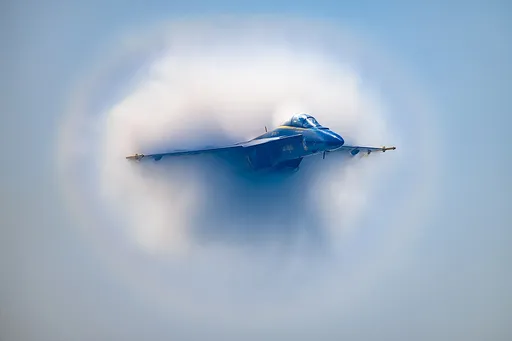
Hornet hornetCC BY 2.0 · Erik Drost · source 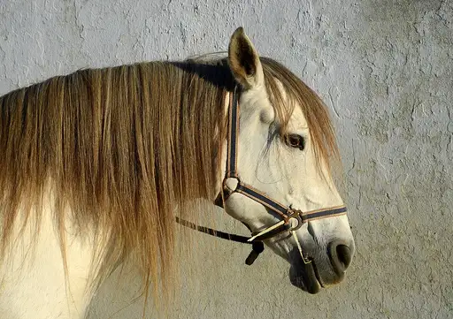
Horse horseCC BY-SA 4.0 · Alvesgaspar · source 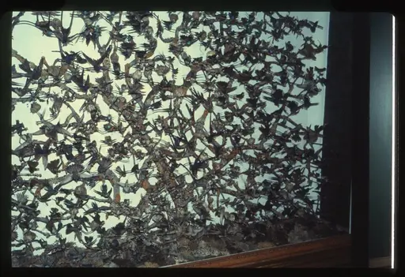
Hummingbird hummingbirdCC0 · Unknown authorUnknown author · source 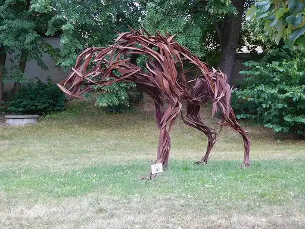
Hyena hyenaCC BY-SA 4.0 · JiriMatejicek · source 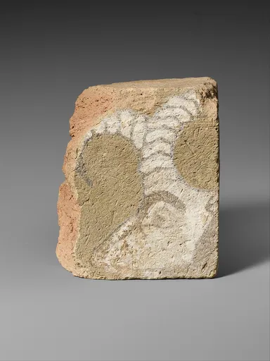
Ibex ibexCC0 · This file was donated to Wikimedia Commons as part of a project by the Metropolitan Museum of Art. See the Image and Data Resources Open Access Policy · source 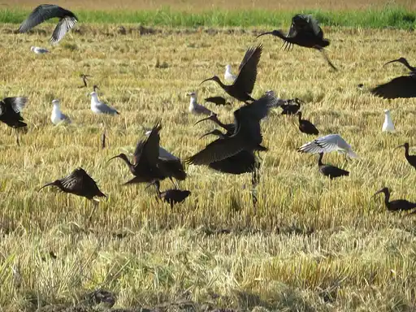
Ibis ibisCC BY 4.0 · Juan Emilio Prades Bel · source 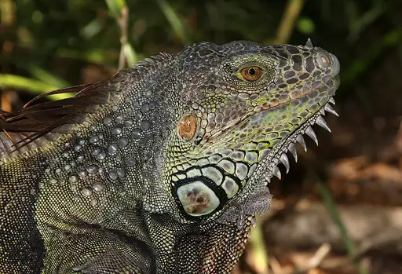
Iguana iguanaCC BY-SA 3.0 · Ianaré Sévi · source 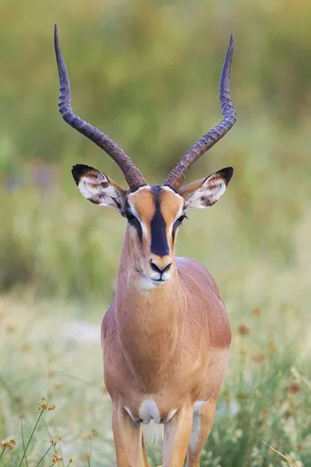
Impala impalaCC BY-SA 3.0 · Yathin sk · source 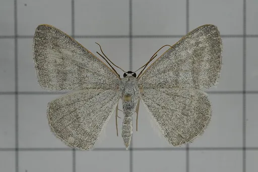
Inchworm inchwormCC BY 2.0 · Hsu Hong Lin from 南投縣集集鎮, 中華民國 · source 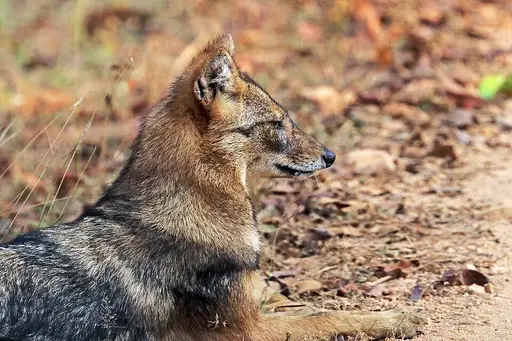
Jackal jackalCC BY-SA 4.0 · Charles J. Sharp · source 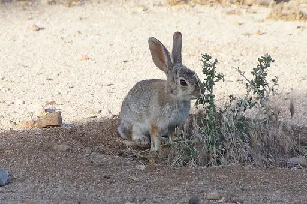
Jackrabbit jackrabbitCC BY 2.0 · rob Stoeltje from loenen, netherlands · source Jaguar jaguarCC BY 2.0 · foshie from Watford, UK · source 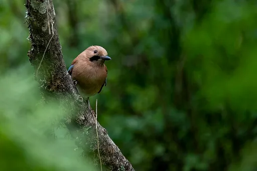
Jay jayCC0 · Sangyam adventurer · source 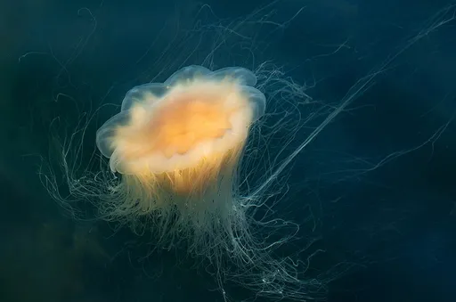
Jellyfish jellyfishCC0 · W.carter · source 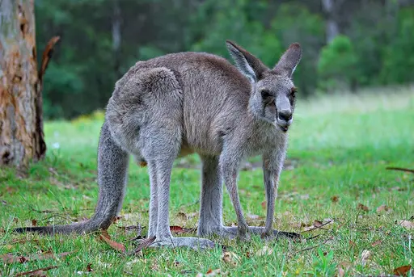
Kangaroo kangarooCC BY-SA 3.0 · Mark Wagner, based on image by User:Lilly M · source 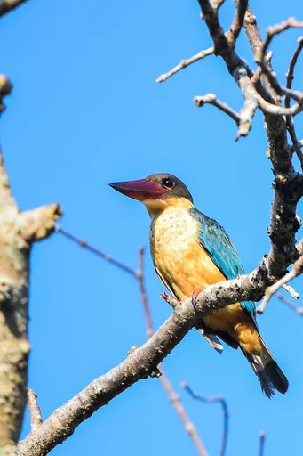
Kingfisher kingfisherCC BY-SA 4.0 · Shamique · source 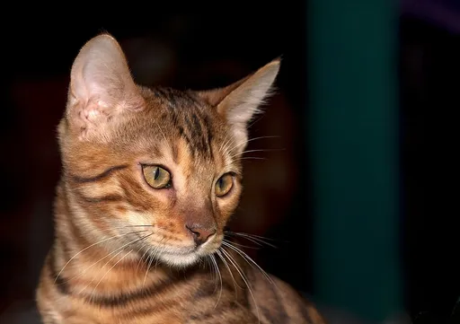
Kitten kittenCC BY-SA 2.0 · Nickolas Titkov from Moscow, Russian Federation · source 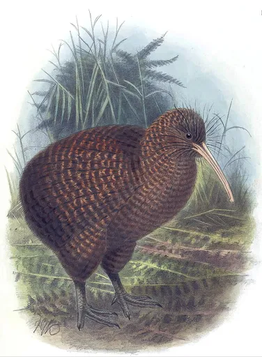
Kiwi kiwiPublic domain · John Gerrard Keulemans · source 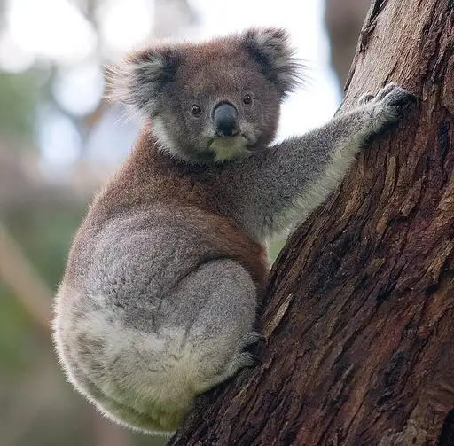
Koala koalaCC BY-SA 3.0 · Diliff · source 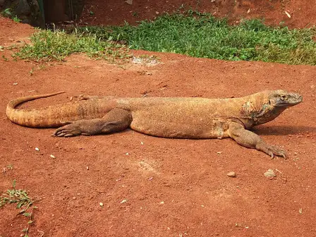
Komodo dragon komodo-dragonCC BY-SA 3.0 · Midori · source 1 2 3 4 5 6 7 8 9 10 11 12 13